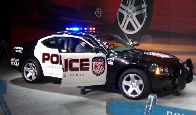

#10292 1 2006-07-27T00:55:24Z Trogdor007 (Not really)
I'm currently taking driver's education! I got my learner's permit on June 28th, and I will be eligible for a license 120 days later! Today, at Driver's Ed., scheduled my Road lesson (four two-hour lessons) and my Driver's Test. I have a lesson October 5th, 10th, 12th, and 17th, and my test is 8:00 AM on December 6th (that's the earliest I could go...

).
I have gone driving with my father on several occasions since I received my permit. During these 'trips,' I have discovered that I am far too large to fit comfortably in any of our cars (A Toyota Sienna Minivan, a Volvo Station Wagon, and a small red Toyota). So, I had to come to a decision: What kind of vehicle is affordable, and will I fit in? You see, my parents said if I buy the car, they'll get the insurance.
I chose: A VW van. I found one for sale in my town for $200. The engine is great, it's got airbags, no ABS. Only problem is the paint job.
My solution? I am going to paint it like the Mystery Machine.
#207639 2 2006-07-27T00:58:03Z Spiker Hahaha, that's awseome. If money wasn't an option though (200$ doesn't seem very workable) I would buy this
http://www.akamoto.co.uk/gallery/Ford-GT40-1024.jpg#207644 3 2006-07-27T01:08:48Z Red Reamer Seems like an unrealistic goal for a first car.
Though I agree, to an extent. I would buy a GT40 replica. They're actually cheaper, and aren't as expensive to fix.
#207648 4 2006-07-27T01:19:03Z wedgie Yeah but then you couldn't say, 'I own a ford gt40.' You just have some cheapy replica.

Yeah thats a cool choice trogdor. Just last weekend i went to a VW bug jam weekend and the cars there are

There were loads of really nice camper vans there. It made me want to get one soo much. It would have been soo much sweeter than camping.
You can see some of the cars that were on show
HERE.
My VW golf is being repaired at the moment after some stupid woman reversed out into the side of it while i was driving. So i get a funky little Ford KA for a week.

#207652 5 2006-07-27T01:24:51Z 7! If you're looking for a new car, cheapest will be around $8500 or so, (crap on wheels Kia or something). How about a $16000 Honda Civic?
Or, buy your used Mystery van...that'd be sweet. The thing about used cars is that they are older, so their parts aren't as reliable as a new one. And that Ford GT40 costs around $151,000.
#207661 6 2006-07-27T01:44:39Z Guest I remember my time in drivers ed. I had to take the class. 3 hours a day, 5 days a week, 2 weeks. The class was boring. And when I got to take the test, I was glad I took the class. Driving was fun for the furst few months, but now it just gets kinda boring. Oh well. Enjoy it and be safe.
#207665 7 2006-07-27T01:56:09Z rennaT Seems like an unrealistic goal for a first car.
http://auctions.yahoo.com/i:HOT%20WHEELS%2...0white:95025909
95 cents is unreasonable?
#207667 8 2006-07-27T02:04:32Z Trogdor007 You all seem to be forgetting about my size issue! A van is great for me, because I'll fit better.
#207674 9 2006-07-27T02:19:40Z 7! Buy a...hmm....used Chevy Tahoe?
#207707 10 2006-07-27T03:29:11Z elaxion Or...............A WHITE BRONCO!!!!! Or you could get the thing that alcaida drives

.
#207711 11 2006-07-27T03:41:35Z Implied Quotient Get an original, army-grade Hummer! You can get them online
here for $28,000 a piece. Unfortunately, they're for off-road use only.
You could always get a
Bugatti Veyron:
1,001 Horsepower
16 Cylinder, 16.6 litre engine ("W" configuration)
Top Speed: 250 mph (400+ km/h)
0 to 60 in 3 seconds, 0 to 180 in 14 seconds
1.2 million dollar price tag
#207714 12 2006-07-27T03:50:36Z Trogdor007 I am completely and utterly anti SUV and Hummer. Don't even mutter their names in my presence.
#207758 13 2006-07-27T10:38:14Z 3v!1 You could always get a Bugatti Veyron:
1,001 Horsepower
16 Cylinder, 16.6 litre engine ("W" configuration)
Top Speed: 250 mph (400+ km/h)
0 to 60 in 3 seconds, 0 to 180 in 14 seconds
1.2 million dollar price tag
What a good idea!
#207764 14 2006-07-27T11:16:51Z Pembie I'd suggest getting a ute. (if they sell 'em in USA) A Ford Falcon XR6, is about AUS$20,000. This is ofcourse if they sell them in USA or where ever you live.
#207804 15 2006-07-27T15:10:13Z Trogdor007 What's an "Ute?"
#207820 16 2006-07-27T16:21:37Z Borealis I don't really have a suggestion for you.
I have a '64 Chevy Impala SS. 'Nuff said, beautiful car, I got it cheap as a wreck and had it restored.
#207845 17 2006-07-27T17:34:43Z Bigblargh I just want to say the painting it like the Mystery Machine is the coolest thing I've ever heard.
#207868 18 2006-07-27T18:08:43Z Guest I drive a Fav4. I like it though. I gets great gas mileage. No joke. 30 mpg. Thats great for a SUV. My parents have a toyota prius and an explorer. An explorer would be great for you because of it size, but it stillgets pretty good mileage.
#207877 19 2006-07-27T18:44:07Z wedgie Get an original, army-grade Hummer! You can get them online here for $28,000 a piece. Unfortunately, they're for off-road use only.
You could always get a Bugatti Veyron:
1,001 Horsepower
16 Cylinder, 16.6 litre engine ("W" configuration)
Top Speed: 250 mph (400+ km/h)
0 to 60 in 3 seconds, 0 to 180 in 14 seconds
1.2 million dollar price tag
Yeah a 750,000 car is a good choice for your first car.
Trogdor, you should get a VW camper van or a VW bus, they are roomy and soo darn cool.

#207880 20 2006-07-27T18:49:50Z Guest heh, define cool. Retro cool maybe, but not modern cool.
#207895 21 2006-07-27T19:13:23Z McP3000 I am completely and utterly anti SUV and Hummer. Don't even mutter their names in my presence.
What?! thats stupid...A mustang gets less Miles per Gallon than my Tahoe. I dislike that biased with a passion. Next, your EXTREMELY old and worn Van will get something like 5 miles to the gallon versus my 15Road/18Highway.

#207925 22 2006-07-27T20:02:47Z 7! Then again, the Tahoe is surprisingly fuel efficient for it's class. But the Escalade gets much less... O_o
Anyways, don't buy a sports car or a small lux car, (like the Audi A4/BMW 3/Mercedes C). They're hard to get out of, (even for me, 5'3"). Always banging my head on the roof. And sports cars are very low and have limited headroom and leg room for many.
Best bet is to buy a used van or a midsize SUV that's fuel efficient, (2001 Acura MDX ~$15-25 grand). By the way, what's your budget?
#207988 23 2006-07-27T22:12:17Z elaxion I searched for the "ute" under google images and it's one of the ugliest cars I've ever seen.
#208026 24 2006-07-27T23:25:04Z Trogdor007 For the record, nothing beats German Efficiency. According to the man who is selling the car, it gets 28 MPG. And since when is '89 EXTREMELY old?
And thanks BigBlargh. That's why I'm doing that. (Should I get a license plate that says "SCOOBY?")
My Budget is 1000. I want to save a bunch of that for some post sales additions, if you catch my drift (VW VAN WITH NOS!)
My test date has been moved to Halloween! YAY!
#208029 25 2006-07-27T23:33:15Z iangb So i get a funky little Ford KA for a week.
Yay! I drive a KA!
Anyway... nice idea, if you can get the paint job to work. You just need to buy a large dog to sit in the passenger seat, and you'll be set to go.
#208047 26 2006-07-28T00:29:17Z Trogdor007 Will my pug, Durango, do?
Attachment (lost): post-5-1154046684.png
#208051 27 2006-07-28T00:35:36Z wedgie So i get a funky little Ford KA for a week.
Yay! I drive a KA!
Anyway... nice idea, if you can get the paint job to work. You just need to buy a large dog to sit in the passenger seat, and you'll be set to go.
Haha, unlucky for you. I have to admit, its a nice car to drive, but i just
hate how it looks. *shudders*
Its a brand new one too, only 3000 miles on the clock.

But i still cant wait to get my golf back.
#208054 28 2006-07-28T00:40:00Z smartalco you should get a durango to put durango in

(sry, had to)
#208070 29 2006-07-28T01:30:32Z 7! A $1000 car? You won't find much after 1998.
#208074 30 2006-07-28T01:37:25Z Spiker Well, just think, if you do stick with the Mystery Machine, your not going to pick up many girls, and the ones you do are going to be very very werid.
#208077 31 2006-07-28T01:53:47Z Guest Why not get a nice pickup. Spacious, and can hold friends in the back?
#208078 32 2006-07-28T01:54:15Z Trogdor007 Are you kidding? Obviously, you've never dated a Drama Geek or a Band Geek.
Don't get me started on my Durango rant. When you picture a "Durango," that sounds like a sexy sexy sexy sexy sexy sports car. Not a klunky Esoovee.
#208093 33 2006-07-28T02:27:56Z rennaT Well, just think, if you do stick with the Mystery Machine, your not going to pick up many girls, and the ones you do are going to be very very werid.
Are you kidding? Daphne's a fox!
#208097 34 2006-07-28T02:49:14Z Trogdor007 Turtlenecks are a turnon for me... so Velma!
EDIT: JINKIES would fit on a plate!
#208246 35 2006-07-28T12:27:26Z 7! Lmao, JINKIES...
Try looking at used Tahoe's or the sort. Like something from 1985-1995.
#208248 36 2006-07-28T12:47:25Z sweep I despise Scooby Doo.
If you do the paintjob, and one day find out someone set your van alight, burning it to the ground, then I apologise for my actions.
/pre-empting
#208329 37 2006-07-28T16:50:25Z Trogdor007 Aww... sweep, that means so much. Apology accepted.
In truth, I don't really like Scooby that much either. I've just always dreamt of a hippy van, and it is the only thing that comes to mind. Every one I have told the idea to loves it!
#208346 38 2006-07-28T17:41:33Z Keron Cyst Honda Element?
#208372 39 2006-07-28T18:49:36Z 7! $15000. Element looks hideous, our neighbor has it, (and a Lamborghini Gallardo), and it makes the house look $2,000,000 cheaper.
What about leasing a car for x amount of months? You could get a Honda for around $100-$200 a month almost anywhere.
#208401 40 2006-07-28T20:05:15Z Trogdor007 EWWW!!!
Elements look like they could melt in extreme heat!
#208403 41 2006-07-28T20:06:27Z McP3000 My input:
Do anything, but please, DONT GET THE SCOOBY-DOO PAINTJOB...You think that your not a geek now? A 6'9" white guy in a 60's VW van with a scoobydoo paintjob. Your like a Scooby-Doo trekkie
#208407 42 2006-07-28T20:11:23Z AluminumHaste Funny story, I hope you do well on your test.
For me, my car to buy is this:
http://www.mbusa.com/models/main.do?modelCode=S65
Or
http://www.mbusa.com/models/main.do?modelCode=SL65
MMMM 738 ft. lbs. of torque @ 2,0000rpm DDRRRRROOOOOLLLLLLL

#208431 43 2006-07-28T20:46:47Z 7! mmm $179,000...
I don't like the new S550 at all. It's way too big now. ANd I think it's styling is a little overdone.
#208499 44 2006-07-28T22:37:53Z Britannia Many I could choose...
Ferrari 430 (the most unrealistic)
Aston Martin DB9 Conv (most probably my realistic dream, as I am actually going to do a site fo one of their dealers, honest!)
Toyota Hilux 4WD (according to that git Clarkson, the most reliable car ever)
Ang a Veyron would also be cool I 'spose...
#208595 45 2006-07-29T03:47:31Z Trogdor007 MCP, do I really sound like the kind of guy who'd care if he stuck out?
I wear frigging pirate boots!
#299997 46 2007-02-22T21:10:32Z Trogdor007 UPDATE!
So I got my license, and my dad turned the car down. But to make it up to me, we're getting a used police car (Local). And over every police marking, we're putting a flame decal on it.
This'll be a Ford Crown Victoria, which, after checking out sizing, I squeeze into. I still hit my head, but leg room and wind shield slant are perfect. I tested out a Ford 500 at a dealership, so I know the sizing (the best car fit was a beetle!?!?!).
The best part'll be the pricing. We can get this thing for 3000 dollars, and my graphic designer cousin is going to send me the decals for free.
Is that cool, or what?!?
#300002 47 2007-02-22T21:28:23Z Tsukatu If you don't have to cover the decals, don't.
#300005 48 2007-02-22T21:37:28Z Trogdor007 It'd be pointless, Tsukatu... they removed the lights and stuff already.
#300007 49 2007-02-22T21:40:29Z Topolord the possibilities...endless...
#300008 50 2007-02-22T21:40:43Z Luminaflare Aw if you had the van you could have put a jet engine in the back....
Incedently i

camper vans and you have settled my choice of car for life.
#300069 51 2007-02-23T00:27:26Z epigone My first car is a ford Mustang circa 1996. It looks great, some minor scratches, and runs like a dream. So, what I'm saying is you can find amazing cars for cheap prices, mine was $4200.
Also, don't rush buying a car. Wait until you *really* need one. For instance, if you want to drive to school next year, don't buy one in the beginning of the summer if you can find another car to drive (or have people drive you). I hope you have a good job and work lots of hours, because gas is expensive.
#300118 52 2007-02-23T03:09:26Z Trogdor007 I need one. I need a car, and I would love to simply borrow the family car, but I can't fit in the driver's seat. There is an actual need for me to own my own car. And I've got a job at a bookstore (I can reach high shelves).
#300342 53 2007-02-23T21:12:49Z faemir Perhaps you should try to get on pimp my ride
#300467 54 2007-02-24T02:42:34Z Trogdor007 Perhaps you should try to get on pimp my ride
...
...
Oh my god. My car
so needs hydraulics. I should do that.
#300476 55 2007-02-24T03:21:41Z Pembie Umm, that might be a bit dangerous for your head.

#300642 56 2007-02-24T16:12:43Z Trogdor007 Umm, that might be a bit dangerous for your head.

Oh Dear... that would result in a lot of whiplash, wouldn't it...
Damn.
#300653 57 2007-02-24T16:54:21Z Luminaflare just get a convertible trog that way there is room for your head and all you have to do is move the seat back. also you can have hydraulics then.
#300654 58 2007-02-24T16:59:14Z Trogdor007 I... live... in... New England.
I might as well drive a bathtub filled with ice cubes.
Hey... that's not a bad idea!
#300658 59 2007-02-24T17:10:29Z Luminaflare *has no idea what new england is like or where it is*
...
seriously
#300666 60 2007-02-24T17:21:35Z Keron Cyst New England; it's a state on the East Coast of the U.S.
#300675 61 2007-02-24T17:39:53Z Trogdor007 ...
Keron Cyst, are you serious?
New England is an area of American in the North East that contain ME, NH, VT, MA, CT, and RI.
And it gets cold. And I don't fit in most convertibles.
#300691 62 2007-02-24T18:38:35Z JOKER Hey Trogdor! Im only 15 but if you like I can design awsome desigs for your car!
")
Yust PM and i can show you previews of some of my sideflames.

Oh and if you need hook-ups, my sisters housband has a body shop in Miami.
yust PM me
#300707 63 2007-02-24T19:26:32Z wedgie Get a mini, purely for the entertainment value.
#300708 64 2007-02-24T19:32:07Z Borealis It's true, New England is very, very cold, and wet.
#300710 65 2007-02-24T19:35:03Z Ad I've been saving up for one of these:
Mazda 323. Phwoar.
Often cheap as chips, and they look goddamn schmeckshee. Bit to small for you tho.
Good miles to gallon too and all the extras in the base model.
I've put a bit of cash aside for a car since I was 11. Got 3k so far.
Just over a year 'til I get behind the wheel for the first time.
Can't wait.
#300767 66 2007-02-24T22:32:09Z Trogdor007 Get a mini, purely for the entertainment value.
I hate you.
And despite the great inside space, I do not fit in the mini cooper. I fit in the VW beetle though...
Oh, and for an update, my local car plan fell through, so I'm still looking for a good quality cop car. We may end up settling for a beetle, and then I'll apply the flames
THAT MY COUSIN HAS ALREADY DESIGNED, ON A CAR STYLE BY CAR STYLE BASIS[/i], making a firebug. Yay!
#300780 67 2007-02-24T23:09:51Z Ad And it gets cold [in New England]. And I don't fit in most convertibles.
You
giant pansy!
If you describe it as it sounds, New England is named so as it has the same terrible waether as the old one.
People still drive convertables. They just put the roof up when it pees down.
And we all secretly know you're really 4'7. You don't have to hide any longer. We're really supportive about the matter. Spesh me n Wedgie
#300792 68 2007-02-24T23:26:40Z Trogdor007 Adster, you obviously didn't listen to me. I can't put the roof up. That's the problem.
Oh, and thank goodness my ruse is up. I must have imagined all my headwounds from hitting door frames.
#301376 69 2007-02-26T20:14:36Z Trogdor007 UPDATE!
The local car plan fell through, but my great uncle, who has many contacts with the Harrisburg, Pennsylvania Police force, is getting me the chief's Dodge Charger, Police conditioned, with a prisoner cage still intact.
From what I understand, these cars are also good for plus sized drivers. Yay!
